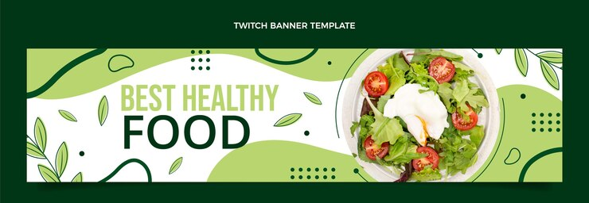
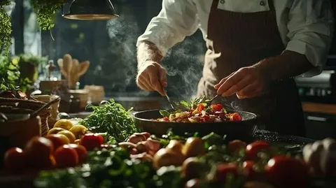

|
|
🍳 Вкусно и простоДомашние рецепты каждый день |
Сегодня готовим: |
Главная | Рецепты | Категории | Рецепт дня | Подписка | О блоге

|
«Вкусно и просто» – это блог о домашней кухне, где каждый рецепт проверен на собственной кухне. Мы публикуем простые пошаговые рецепты с фото и понятными объяснениями. Готовить дома – это легко! Каждую неделю выходят новые рецепты: от быстрых завтраков до праздничных тортов. Подписывайтесь на рассылку, чтобы ничего не пропустить. |
 Так выглядит наша кухня |
🍝 Паста карбонара
Классическая итальянская паста с хрустящим беконом, желтками и ароматным пармезаном. |
🥣 Крем-суп из тыквы
Нежнейший осенний суп-пюре со спелой тыквой, густыми сливками и пикантным имбирём. |
🍰 Шарлотка
Самый простой и пышный яблочный пирог к чаю, который точно получится с первого раза. |
|
🍳 Вкусно и просто Домашние рецепты каждый день © 2026 |
Главная | Рецепты | О блоге | Сделано с ♥ для любителей готовить |